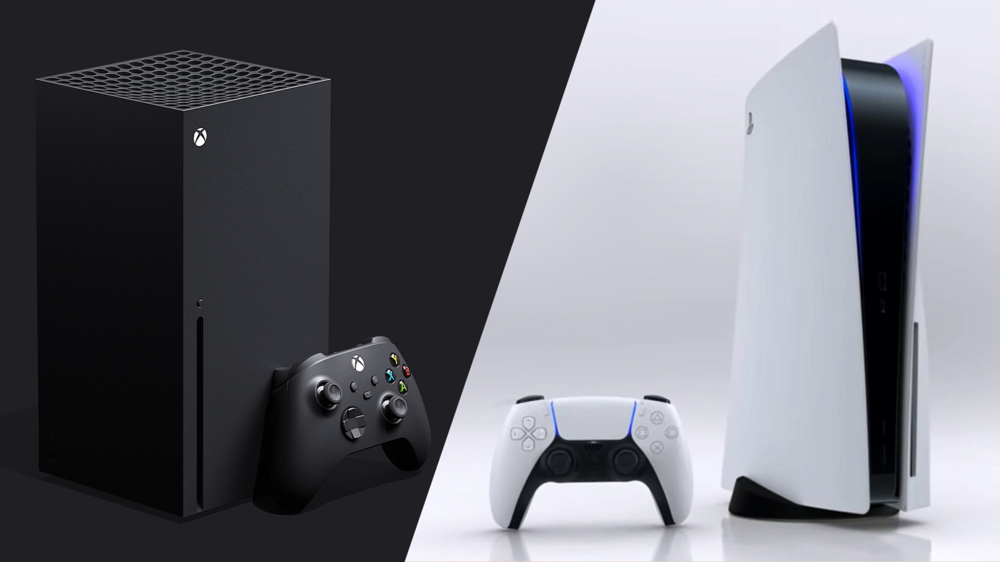

Poll Results Come in, and Indicates that Microsoft Should be Worried About the PS5. By Paul Tassi on July 8, 2020.

If you wanted a look at how much ground Microsoft has to make up after this past Xbox One generation, a series of recent IGN polls are putting that into perspective.
I’ve seen two different polls from IGN about this topic over the past few months, one way back in March before the last few events:
And a second one more recently, as of this past week now that more information has been made known:
While the sample size of the first one is unclear, the second is not insignificant, that’s 50,000 potential consumers voting on the biggest video game website on the internet. Political polls have had sample sizes far smaller and have been given much more weight.
The first thing you’ll notice is that confidence has increased in the PS5 from the first one and decreased for the Series X. But what I’m seeing more than anything else are the ratios here, and they look eerily familiar.
The available sales data and estimates we have from this past generation is that the PS4 has sold 110.4 million units, while it’s estimated the Xbox One has sold 46.9 million, though Microsoft has stopped reporting official tallies.
But doing the math, that means PS4 has outsold Xbox One this generation by 2.36x.
Take the numbers from the most recent IGN poll, 54.1% to 21.6%, and without actual sales numbers, at that ratio, you would get the PS5 outselling the Xbox Series X by 2.50x, an even higher proportion.
This is kind of amazing to me because unlike the rollout of the Xbox One with its disastrous ties to Kinect and debates over disc ownership, there have been no similar controversies with the Series X. From what we do know about it, it has a lot of strengths like a clear power advantage over PS5, and a big launch title in the form of Halo Infinite, while Sony has a somewhat less powerful system that isn’t launching with a high profile game like that. This poll is also probably skewed in Xbox’s favor, given that it’s a US-based poll and PlayStation outperforms Xbox to an even greater degree internationally.
What you’re seeing here is both brand loyalty and confidence in the future. The players that picked Sony this generation seem satisfied with that purchase, and see no reason to hop ship to Xbox, despite the reveal of the Series X not falling on its face, or really anything close to that. But we might actually see a few Xbox devotees switch sides due to how the past generation went, or because their friends own PlayStations, a snowball effect which could account for the gap seen here in polling. But there does not seem to be a mass shift coming where suddenly we’ll go back to the days of PS3 and Xbox 360 where sales were close to even.
Microsoft claims they don’t care about console sales and just want the “ecosystem” to thrive, whether that’s playing Game Pass titles on PC or Xcloud or wherever. And I can believe that to a certain extent, as if Microsoft can convince someone to get Game Pass for the entire next console generation, that’s essentially the dollar equivalent of them buying at least two more consoles.
But I don’t think they enjoy Sony outselling them, and it goes to show how much work still lies ahead of them.
There is a lot that still could be revealed that could change polls like this. Microsoft is about to do a big first party games showcase in two weeks that could impress. And of course both systems still have yet to announce their price, and if I had to put money on it, between the Series X and the Lockhart, I think MS may be going for Sony’s throat this time around.
But yeah, I think it’s interesting we find ourselves starting this gen pretty much exactly where we ended last gen in terms of player interest in these consoles, despite Microsoft making a lot of good course-corrections so far. We’ll see how it plays out in the fall.